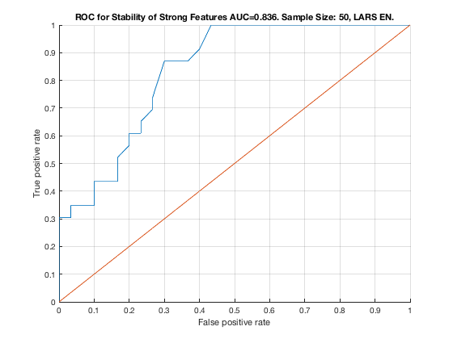

Feature Stability of LARS_EN on TieNet with 50 samples.
unit_stability_type(50, 3, "TieNet")
Table 26. Feature Stability of LARS EN on TieNet with 50 samples.
__________________________________________________________________
SELECTED COUNTS: Strong=23, Weak=26, Irrelevant=4
TOTAL COUNTS: Strong=23, Weak=26, Irrelevant=4
Feature_Number Stability Type Path_Length N_MBS Equivalence
______________ _________ ____________ ___________ _____ ___________
21 ' 0.690 ' ' STRONG ' 1 0 21
22 ' 0.690 ' ' STRONG ' 2 0 21
23 ' 0.690 ' ' STRONG ' 3 0 21
18 ' 0.502 ' ' STRONG ' 1 0 18
19 ' 0.502 ' ' STRONG ' 2 0 18
20 ' 0.502 ' ' STRONG ' 3 0 18
28 ' 0.474 ' ' weak ' 5 0 28
1 ' 0.464 ' ' STRONG ' 1 0 1
2 ' 0.464 ' ' STRONG ' 2 0 1
3 ' 0.464 ' ' STRONG ' 4 0 1
4 ' 0.464 ' ' STRONG ' 4 0 1
5 ' 0.464 ' ' STRONG ' 3 0 1
6 ' 0.464 ' ' STRONG ' 3 0 1
24 ' 0.432 ' ' weak ' 4 0 24
12 ' 0.422 ' ' STRONG ' 1 0 12
13 ' 0.422 ' ' STRONG ' 2 0 12
14 ' 0.422 ' ' STRONG ' 3 0 12
15 ' 0.422 ' ' STRONG ' 3 0 12
16 ' 0.422 ' ' STRONG ' 2 0 12
17 ' 0.422 ' ' STRONG ' 4 0 12
40 ' 0.416 ' ' weak ' 3 0 40
42 ' 0.414 ' 'irrelevant' Inf 0 42
9 ' 0.394 ' ' STRONG ' 3 324 7
10 ' 0.394 ' ' STRONG ' 4 648 7
11 ' 0.394 ' ' STRONG ' 4 972 7
8 ' 0.392 ' ' STRONG ' 2 1296 7
7 ' 0.390 ' ' STRONG ' 1 1620 7
38 ' 0.374 ' ' weak ' 5 1620 38
33 ' 0.348 ' ' weak ' 8 1620 33
43 ' 0.346 ' 'irrelevant' Inf 1620 43
46 ' 0.322 ' ' weak ' 7 1620 46
30 ' 0.320 ' ' weak ' 10 1620 30
34 ' 0.302 ' ' weak ' 8 1620 34
27 ' 0.294 ' ' weak ' 6 1620 27
29 ' 0.292 ' ' weak ' 11 1620 29
32 ' 0.292 ' ' weak ' 8 1620 32
51 ' 0.290 ' ' weak ' 4 1620 51
53 ' 0.290 ' ' weak ' 5 1620 53
39 ' 0.278 ' ' weak ' 4 1620 39
36 ' 0.276 ' ' weak ' 8 1620 36
49 ' 0.266 ' ' weak ' 6 1620 49
41 ' 0.244 ' ' weak ' 3 1620 41
37 ' 0.238 ' ' weak ' 6 1620 37
52 ' 0.238 ' ' weak ' 4 1620 52
48 ' 0.232 ' ' weak ' 6 1620 48
26 ' 0.230 ' ' weak ' 5 1620 26
35 ' 0.222 ' ' weak ' 7 1620 35
47 ' 0.204 ' 'irrelevant' Inf 1620 47
50 ' 0.194 ' ' weak ' 5 1620 50
45 ' 0.188 ' ' weak ' 7 1620 45
31 ' 0.162 ' ' weak ' 9 1620 31
25 ' 0.160 ' ' weak ' 6 1620 25
44 ' 0.128 ' 'irrelevant' Inf 1620 44
Figure 26. ROC for Stability of Strong Features AUC=0.945. Sample Size: 50, LARS EN.
_____________________________________________________________________________________
